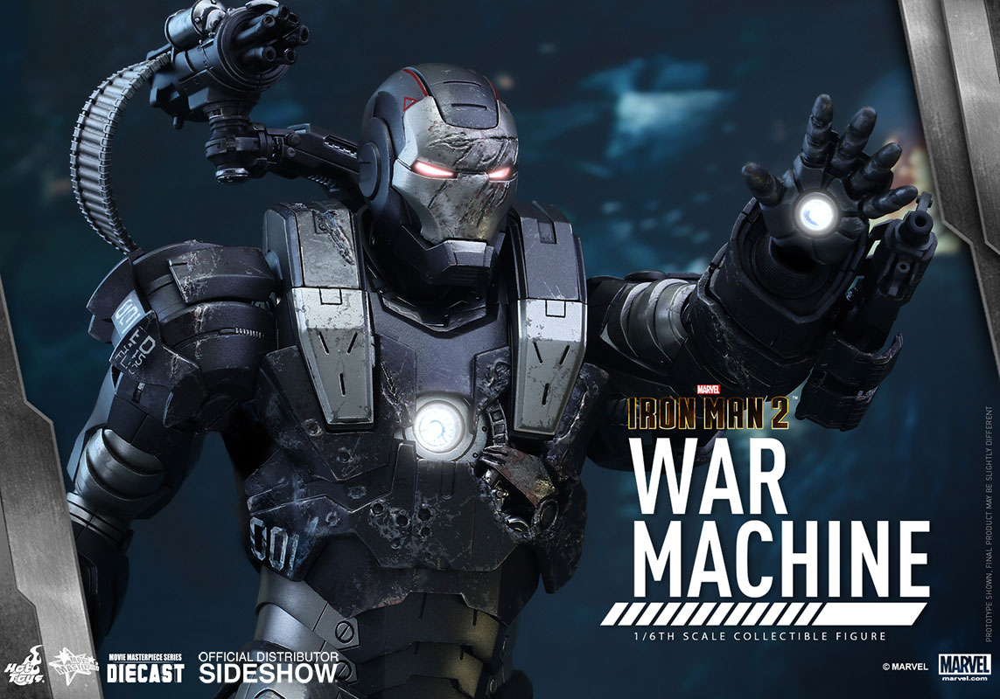
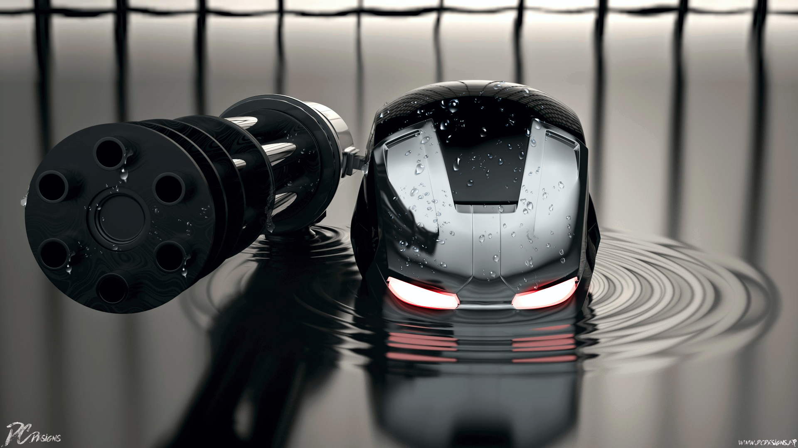

| Path of Armor | |
|---|---|
A longtime friend of Tony Stark, Air Force Lieutenant Colonel James “Rhodey” Rhodes knew the genius playboy better than most, but couldn’t necessarily relate to his carefree lifestyle. After testing his Jericho Missile in Afghanistan, Stark told Rhodes to ride in another Humvee, which inadvertently saved Rhodes’ life and changed Tony’s forever as the Ten Rings attacked and made off with the industrialist. While Stark secretly built the first Iron Man armor to break away from his captives, Rhodes searched for him and was there when they found the escaped Tony wandering in the desert. |
 |
When Stark, in his updated Iron Man armor, attacked the Ten Rings, Rhodes was called in to evaluate the strange occurrence, leading Stark to admit he was inside the suit. Rhodes held a press conference calling the whole thing a botched training exercise to cover for Stark. After Obadiah Stane stole the updated ARC reactor out of Tony’s chest, Rhodes helped Pepper Potts get the original reactor in place to save his friend, contemplating donning a suit himself as Tony flew off to face Stane. After Stark publicly admitted he was Iron Man, government concern grew over Stark’s armor and enemies trying to replicate it, which increased when Ivan Vanko proved to have figured out similar technology. Rhodes tried to convince his superiors not to claim Stark’s suits for themselves.
Stark threw a birthday party for himself where he appeared intoxicated and, wearing his armor, endangered the civilians present. To put a stop to his friend’s erratic behavior, Rhodes put on Tony’s older Mark II armor, leading to a brawl between the two. In the wake of this, Rhodes took the Mark II suit to Edwards Air Force Base, where Rhodes’ superiors called in Stark rival Justin Hammer to outfit the armor with additional weapons. After Hammer showed off his best destructive implements, Rhodey told him to put them all in the suit, leading to the debut of a new hero called War Machine.